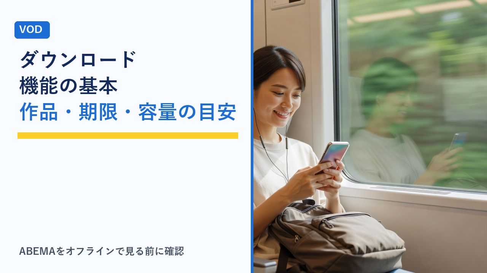

ABEMAのダウンロード機能：保存できる作品・視聴期限・端末の容量の目安
更新日：2026-11-21

通勤電車や飛行機の中など、通信が不安定な場所や通信量を使いたくない場面で役立つのが、作品をあらかじめ端末に保存しておくダウンロード機能です。ABEMAにもこの機能がありますが、使えるプランが限られているうえ、保存した作品をいつまで見られるか、端末の空き容量がどれくらい必要かは、契約前に分かりにくい部分です。この記事では、ABEMA公式の料金ページの表示（2026年11月21日確認）をもとに、ダウンロード機能の位置づけと、使う前に確かめておきたい点を客観的に整理します。
ダウンロードが使えるのは「ABEMAプレミアム」だけ
ABEMAの有料プランは2種類あり、公式の料金ページではダウンロードについて次のように表示されています（税込・月額、2026年11月21日確認）。
| 項目 | 無料 | 広告つきABEMAプレミアム | ABEMAプレミアム |
|---|---|---|---|
| 月額料金 | 0円 | 680円 | 1,180円 |
| ダウンロード | 有料プランの機能 | できない | できる |
| プレミアム限定作品 | 見られない | 見放題 | 見放題 |
| 広告 | あり | あり | なし（一部対象外あり） |
| 放送中の追っかけ再生 | 有料プランの機能 | できない | できる |
| 同時視聴デバイス | ― | 1台 | 2台 |
料金ページには「広告つきABEMAプレミアムはABEMAプレミアム限定機能が利用できません」という注記があります。つまり、安いほうのプランに登録してもダウンロードは使えません。見られる作品の範囲は2つのプランで同じなので、月額500円の差は「広告・追っかけ再生・ダウンロード・同時視聴台数」の差と整理できます。プラン全体の違いはABEMAプレミアムと広告つきプランの違いにまとめています。
公式ページでは、この機能は「ダウンロードするとオフラインでも見放題」「お気に入りの作品をダウンロードしておけば、いつでも楽しめます」と紹介されています。
保存できる作品は、作品ごとに確かめる
公式の料金ページは、どの作品がダウンロードの対象かまでは示していません。動画配信サービスのダウンロード機能は、作品ごとの権利の条件によって保存できる作品とできない作品が分かれるのが一般的で、ABEMAでも「すべての作品を保存できる」と考えないほうが安全です。確かめ方は次のとおりです。
- 作品ページ・話数の一覧でダウンロードの操作ができるかを見る：保存できる作品かどうかは、アプリで実際に作品を開くのがいちばん確実です。
- 見たい作品を登録前に決めておく：ダウンロード目的で登録するなら、目当ての作品が対象かどうかが判断の中心になります。
- 別料金の番組は分けて考える：ペイパービューや追加購入が必要な作品は、月額プランの見放題とは扱いが異なります。保存できるかどうかも個別に確認が必要です。
- リアルタイム配信とは別の機能：ダウンロードは、好きな時間に再生できるビデオ作品を保存する機能です。放送中の番組を最初から見たい場合は、追っかけ再生の領分になります。
無料で見られる範囲とプレミアム限定の範囲の分かれ方は、ABEMAは無料でどこまで見られるかで整理しています。
「期限」は3種類ある
ダウンロードした作品は、端末に保存したあともずっと見られるわけではありません。動画配信サービスのダウンロードには、一般に次の3種類の期限が関わります。
| 期限の種類 | 内容 | ABEMAで確認できること |
|---|---|---|
| 作品そのものの配信期間 | 配信が終わると、保存済みでも見られなくなるのが一般的 | 公式ページに「コンテンツ毎に視聴期限は異なりますのであらかじめご確認ください」「コンテンツによっては予告なく配信中止になる場合があります」と注記あり |
| 保存してからの視聴期限 | 保存後、一定の日数や、再生を始めてから一定の時間で期限が切れる仕組みを設けるサービスが多い | 具体的な日数は料金ページに記載なし。アプリのダウンロード一覧や公式ヘルプで確認する |
| 契約の有効期間 | プランを解約して有効期間が終わると、保存済みの作品も見られなくなるのが一般的 | ダウンロードはABEMAプレミアムの機能。解約やプラン変更をすると使えなくなる前提で考える |
保存してからの日数や、一度に保存できる本数の上限といった細かな仕様は、今回確認した公式の料金ページには記載がありませんでした。解説サイトの間でも説明が分かれている部分があるため、この記事では数字を挙げていません。旅行や出張の前には、アプリのダウンロード一覧に表示される期限を見ておくのが確実です。
また、保存した作品でも、長い期間まったく通信しないままだと再生前に通信を求められるサービスがあります。長時間のフライトなどで使う場合は、出発前に通信できる場所で一度アプリを開いておくと安心です。
端末の容量はどれくらい必要か
保存に必要な容量は、画質と作品の長さでほぼ決まります。ABEMAが公式に示している容量の数値は今回確認できなかったため、ここでは動画配信サービス全般で公開されている一般的な目安をもとに計算します。実際の容量は作品や画質設定によって変わるので、幅のある数字として見てください。
| 画質の目安 | 1時間あたり | 30分アニメ12話（約6時間） | 映画1本（約2時間） |
|---|---|---|---|
| 低画質・データ節約 | おおむね0.3〜0.7GB | 約2〜4GB | 約0.6〜1.4GB |
| 標準画質 | おおむね0.7〜1.5GB | 約4〜9GB | 約1.4〜3GB |
| 高画質（フルHD相当） | おおむね1.5〜3GB | 約9〜18GB | 約3〜6GB |
たとえば、1クール分のアニメを標準画質で保存すると、多めに見て10GB近い空きが必要になります。空き容量が少ない端末では、次のように考えると無理がありません。
- 先に空き容量を確かめる：iPhoneは「設定」→「一般」→「iPhoneストレージ」、Androidは「設定」→「ストレージ」で確認できます（機種やOSのバージョンで表示名が少し異なります）。
- スマホの画面なら画質を上げすぎない：小さな画面では、標準画質と高画質の差は容量の差ほど大きく感じにくいとされます。タブレットで見る場合は高めの画質が向きます。
- 見る分だけ保存する：全話をまとめて保存するより、数日で見る分を保存して、見終わったら消して入れ替えるほうが容量を圧迫しません。
- 空きに余裕を残す：端末の空き容量がほとんどない状態では、OSやほかのアプリの動作が不安定になることがあります。数GBは残しておくのが無難です。
通信しながら見る場合の通信量はVODの通信量はどれくらい？で、ほかのサービスを含めたダウンロード機能の比較はVODサービスの画質・ダウンロード機能を比較で整理しています。
出かける前の準備の手順
ダウンロードは「保存したつもりが見られなかった」という行き違いが起きやすい機能です。次の順番で準備すると失敗を減らせます。
- Wi-Fiにつないで保存する：スマホ回線で保存すると、保存した容量とほぼ同じだけ通信量を使います。自宅などのWi-Fiで保存するのが基本です。
- 保存が最後まで終わったことを確かめる：途中で止まっている話数がないか、ダウンロード一覧で確認します。
- 通信を切って再生を試す：機内モードにして冒頭を再生できれば、オフラインでも見られる状態です。
- 期限の表示を見る：出かけている間に期限が切れないかを確かめます。
- 見終わったら削除する：次の作品を入れる空きができ、端末の動作も軽く保てます。
公式ページでは、視聴についてスマートフォン・PC・テレビに対応していると案内されています。一方、ダウンロードはアプリに作品を保存する機能のため、どの端末で保存できるかは視聴できる端末とは別に確認が必要です。対応する端末やOSのバージョンは、公式ヘルプの対応デバイスの案内で確かめてください。外出先のフリーWi-Fiを使う場合の注意点は公衆Wi-Fiは安全？にまとめています。
保存・再生がうまくいかないときの確認表
| 状況 | 考えられる原因 | 確認すること |
|---|---|---|
| ダウンロードの操作ができない | プランが対象外、または作品が対象外 | 登録中のプランが「ABEMAプレミアム」か（広告つきプランではないか）。別の作品では操作できるか |
| 保存が途中で止まる | 空き容量の不足、通信の不安定 | 端末の空き容量、Wi-Fiの接続状態 |
| 保存した作品が再生できない | 期限切れ、配信終了、契約の終了 | ダウンロード一覧の期限表示、作品の配信状況、プランの有効期間 |
| 機種変更後に作品が消えた | 保存データは端末ごと | 新しい端末でログインし、保存し直す |
| どれにも当てはまらない | アプリやOSが古い、一時的な不具合 | アプリとOSの更新、アプリの再起動。解決しなければ公式ヘルプの案内を確認 |
なお、公式アプリの機能以外の方法で動画を保存することは、動画配信サービスの利用規約で禁止されているのが一般的です。保存は公式アプリのダウンロード機能の範囲で行ってください。
ダウンロードが向く使い方・向かない使い方
| 使い方 | ダウンロードの必要性 | 理由 |
|---|---|---|
| 通勤・通学の電車で毎日見る | 高い | 通信量を使わず、電波が途切れる区間でも止まらない |
| 飛行機・新幹線での長距離移動が多い | 高い | 通信できない、または不安定な時間が長い |
| データ容量の少ないスマホプランを使っている | 高い | Wi-Fiで保存しておけば、月の通信量を抑えられる |
| 自宅のWi-Fiやテレビで見ることがほとんど | 低い | 通信しながら見れば足りる。限定作品が目的なら広告つきプランでも見られる |
| 端末の空き容量がほとんどない | 使いにくい | 保存できる本数が限られる。写真やアプリの整理が先になる |
自宅で見ることが中心なら、ダウンロードのためだけに上位プランを選ぶ必要は薄くなります。テレビで見る場合の準備はABEMAをテレビで見る方法で整理しています。
選び方のポイント
- プラン名を確かめてから登録する：ダウンロードが使えるのは月額1,180円の「ABEMAプレミアム」です。月額680円の「広告つきABEMAプレミアム」では使えません。
- 外で見る時間がどれくらいあるかで判断する：月額500円の差に見合うかどうかは、通信できない場所や通信量を節約したい場面で見る時間の長さで変わります。
- 目当ての作品が保存できるかを見る：作品によって扱いが違う前提で、アプリの作品ページで確かめます。
- 端末の空き容量と画質を合わせる：空きが少ないなら、画質を抑えて見る分だけ保存する使い方が合います。
- 期限は「配信期間・保存後の期限・契約期間」の3つで考える：どれか1つでも切れると見られなくなります。
- 解約の時期も考えておく：解約するとダウンロードも使えなくなります。解約する場所と締切はABEMAプレミアムの解約手順で確認できます。
よくある質問
広告つきABEMAプレミアムでもダウンロードはできますか？
できません。公式の料金ページでは、広告つきABEMAプレミアム（月額680円・税込）は「ダウンロードできない」、ABEMAプレミアム（月額1,180円・税込）は「ダウンロードできる」と表示されています（2026年11月21日確認）。「広告つきABEMAプレミアムはABEMAプレミアム限定機能が利用できません」という注記もあります。ダウンロードを使いたい場合は、登録時にプラン名を確認してください。
ダウンロードした作品は、いつまで見られますか？
作品によって異なります。公式ページには、コンテンツごとに視聴期限が異なること、コンテンツによっては予告なく配信中止になる場合があることが注記されています。保存してからの具体的な日数は料金ページには記載がないため、アプリのダウンロード一覧に表示される期限や公式ヘルプで確認するのが確実です。また、ダウンロードはABEMAプレミアムの機能なので、解約やプラン変更をすると使えなくなる前提で考えてください。
ダウンロードには、どれくらいの空き容量が必要ですか？
画質と作品の長さで変わります。動画配信サービス全般の一般的な目安では、1時間あたり低画質でおおむね0.3〜0.7GB、標準画質で0.7〜1.5GB、フルHD相当の高画質で1.5〜3GB程度です。30分のアニメ12話（約6時間）を標準画質で保存する場合、約4〜9GBが目安になります。ABEMA公式が示す数値ではないため、実際の容量はアプリの表示で確認してください。